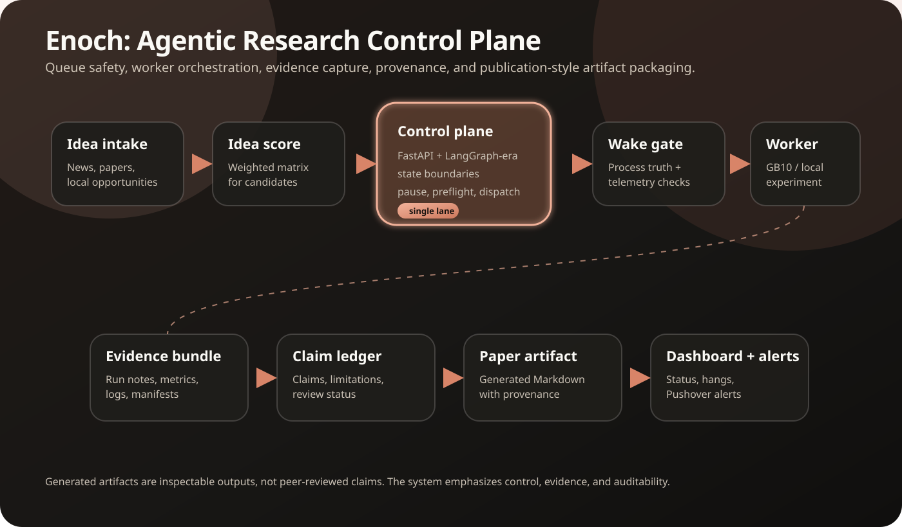
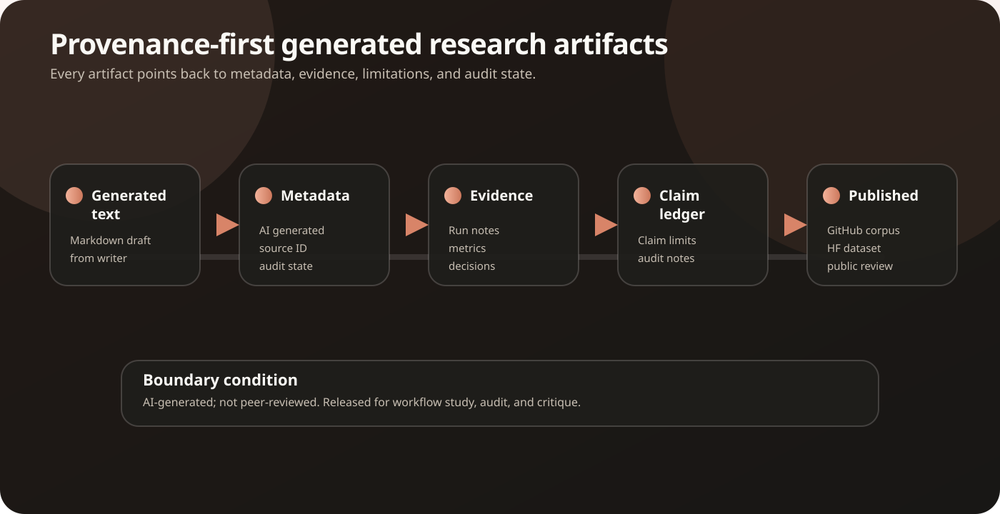

What Enoch is
A reliability layer for long-running autonomous work.
Enoch owns queue state, pause and maintenance controls, worker preflight, single-lane GPU safety, process and telemetry completion truth, evidence sync, artifact rewriting, and dashboard status. Built on FastAPI with a hard state contract; developed in collaboration with Codex.
The generated papers are released as AI-generated research artifacts. The human operator built and operated the surrounding Enoch system; Codex CLI is credited as the worker execution substrate, not as the owner or author of the generated paper prose, arguments, or experimental results.
New here? Start with Enoch Docs for the quickstart, deployment guide, configuration reference, API notes, and provenance caveats.
Workflow
From idea intake to public artifact.
Run the local proof
Verify the control-plane path before trusting the corpus.
This proof validates the local API/dashboard path, worker preflight self-check, and dispatch dry-run behavior. It does not validate scientific correctness, peer review, independent replication, strict claim/evidence auditability, or production readiness of generated artifacts.
git clone https://github.com/alias8818/enoch-agentic-research-system.git
cd enoch-agentic-research-system
scripts/proof-local.shExpected smoke output includes PASS healthz, PASS control status, PASS wake gate healthz self-check, and PASS dispatch dry-run. For setup details, read the quickstart.
Inspect one artifact end to end
Use one bounded artifact as the audit path.
vLLM Attention-Sink Retention 3B Continuous-Serving Stress Campaign is a concrete serving-performance artifact with limitations and reproducibility caveats. Treat it as inspectable, not independently replicated.
- Read the generated report.
- Open the evidence bundle.
- Open the claim ledger.
- Read the limitations and strict audit report before treating any generated claim as evidence-backed.
The 3 that pass
Strict-audit-passing artifacts.
Every artifact below clears the strict gate: non-empty claim ledgers, every claim linked to an evidence reference, and every referenced result file either publicly present or explicitly declared unavailable with a hash and public surrogate. These are the three the release stands behind.
- vLLM Attention-Sink Retention — 3B continuous-serving stress campaign — the same artifact featured in "Inspect one end to end" above.
- SSA-Mamba Retrieval Bridge — content-routed SSM memory for million-token evidence
- GB10 Dense Router Retrofit — strict-audit bundle — a worked example of what a passing audit looks like end to end, including the surrogate-hash path for declared-unavailable result files.
For the other 382, read the strict audit report. It names exactly which artifacts are blocked, why, and how many references are missing per artifact.
System diagrams
Control plane first, artifacts second.
These diagrams are intentionally editable SVGs so the launch story stays crisp: queue safety and provenance are the product, while generated papers are inspectable outputs.


Featured artifacts
Bounded, replication-worthy artifacts from the corpus.
These are not “best papers” in a peer-review sense. They are inspectable AI-generated artifacts with concrete reported metrics, evidence metadata, and bounded claims. Packaging/provenance pass does not imply strict claim/evidence auditability, scientific correctness, or independent replication.
Public framing
Built in the open, with provenance up front.
Release Enoch as an engineering artifact: a working control plane, a corpus of generated outputs, and a transparent record of what was automated. The hook is not “these are human papers.” The hook is that a local agentic system generated, supervised, rewrote, and packaged a research corpus with evidence bundles, claim-ledger files, packaging/provenance lint checks, strict claim/evidence audit gaps, and caveats—and some generated artifacts are specific enough to invite independent replication attempts.